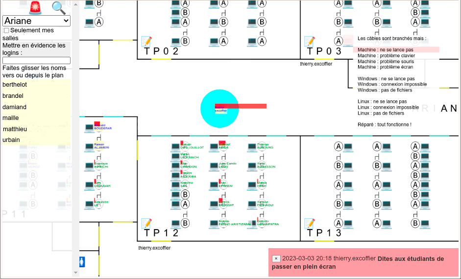

: C5 is Compiler Course Class in the Cloud.
Pourquoi utiliser C5 ?
Empêcher toute tricherie lors des examens sur machine.
- Tout est fait dans une unique page web facile à surveiller visuellement :
- Sujet de l'examen, éventuellement différent pour chaque étudiant.
- Éditeur de code pour répondre.
- Résultat de compilation.
- Résultat de l'exécution.
- Le copier/copier de sources extérieures est impossible.
- Toutes les actions clavier/souris sont mémorisées.
- Les surveillants voient un plan des salles surveillées avec :
- Les étudiants placés sur les chaises.
- Leur avancement dans les exercices.
- Le nombre de fois qu'ils ont changé de fenêtre.
- En cliquant sur l'étudiant il peut voir son travail,
le noter suivant un barème et l'annoter.
Avoir un environnement TP immédiatement fonctionnel.
En effet :
- Rien besoin d'installer pour les étudiants.
- L'étudiant peut accéder à son travail de n'importe où, même sur smartphone.
- Pas besoin d'apprendre à utiliser un logiciel.
- Coloration syntaxique.
- Mise en évidence des parenthèses.
- Mise en évidence des erreurs de compilation.
- Reformatage du code source.
- Recompilation et exécution temps-réel.
- Indices contextuels pour guider l'étudiant vers la solution
en fonction de son travail.
- Outils pour la surveillance d'examen sur de nombreuses salles.
- Permet de suivre l'avancement du travail de l'étudiant à distance.
Fluidifier le déroulement des examens.

- Le fait de placer les étudiants sur les chaises
revient à faire l'appel.
- On voit immédiatement les noms des surveillants associés aux salles.
- On voit les machines qui sont en panne.
- On voit dans quelles salles il reste des machines inocupées.
- Les surveillants peuvent s'échanger des messages d'alerte.
- Le surveillant peut voir l'historique du travail de l'étudiant,
pendant et après la session.
- On peut retrouver qui surveillait un étudiant.
- On peut retrouver qui était assis à coté de qui.
- En fin d'examen, pas besoin de demander aux étudiants de déposer un fichier.
- Les tiers-temps sont automatiquement pris en compte.
- On peut donner du temps supplémentaire à un étudiant en cas de problème.
- Un outil permet de noter et commenter facilement le travail de l'étudiant.
- On peut lister par correcteur les étudiants qui n'ont pas été corrigés
ou bien corrigé de manière incomplète.
- On peut faire le retour de la corrections aux étudiants.
La copie d'écran montre
l'interface du surveillant
qui est présentée plus loin.
Création d'une session de travail.
Comment définir un sujet.
L'ensemble de l'environnement est programmé en Python.
- Vous composez votre sujet dans un fichier nom_sujet.py,
ce nom sera affiché aux étudiants,
il est conseillé de le préfixer par le code du cours.
-
Chaque sujet contient un ensemble de questions s'enchaînant successivement.
Pour chaque question il y a une classe
dont les méthodes définissent la question.
Voici les méthodes dans l'ordre d'appel lorsque l'étudiant arrive sur la question :
- default_answer(self)
calcule le code initial avec lequel l'étudiant commence dans l'éditeur.
Si la question est aléatoire, on peut conserver dans l'instance
de la question l'aléa choisi pour que les méthodes suivantes
puissent l'utiliser pour l'affichage et les tests.
- question(self) calcule le texte de la question au format HTML.
- tester(self) affiche des indices pour aider l'étudiant
dans la zone «Les buts que vous devez atteindre» de l'interface étudiant.
Elle autorise le passage à la question suivante
si la réponse de l'étudiant est correcte.
class Q1(Question):
"""Question 1"""
def question(self):
return "<p>Vous devez faire afficher «Bonjour»</p>"
def tester(self):
self.display('<p>Dans votre code source on devrait trouver :</p>')
self.check(self.worker.source, [
['print' , 'Le nom de la fonction «print» pour afficher la valeur'],
['Bonjour', 'Le texte «Bonjour» que vous devez afficher'],
])
if self.worker.execution_result == 'Bonjour\n':
self.next_question()
def default_answer(self):
return "# Tapez votre programme ici :\n"
Un sujet complet est une liste de questions gérées
par un unique compilateur.
La dernière ligne du fichier définie la liste des questions,
si elle n'est pas indiquée alors toutes les questions du fichier
sont proposées à l'étudiant :
Session([Q0(), Q1(), Q2(), Q3(), QEnd()])
Essayer le sujet.
On suppose que :
- Vous avez accès à un serveur C5.
Si ce n'est pas le cas, les explications pour en installer
un sont plus loin sur la page.
- L'administrateur C5 vous a indiqué comme «auteur».
Pour le mettre en production la première fois et l'essayer :
- Vous allez sur la page d'accueil de C5.
- En bas de la page, vous cliquez sur le bon compilateur
et déposez votre fichier contenant le cours.
- Une ligne représentant votre cours a été ajoutée
- Vous cliquez sur le bouton Try.
- Si votre sujet dépend de la place de l'étudiant, alors
vous devez cliquer sur Place pour vous
placer sur la bonne chaise et recharger la page contenant le sujet.
Modifier le sujet et paramétrer la session.
- Sur la page d'accueil de C5, vous cliquez sur Edit.
- Vous pouvez alors régler tous les paramètres de la session.
- Si vous voulez déposer une nouvelle version du sujet vous cliquez sur Upload a new
source
- Si vous voulez modifier directement le code source, cliquez sur Edit source with C5
et faites Ctrl+S pour mettre en production.
Ensuite il ne reste qu'à recharger la page Try pour voir la nouvelle version.
Ajouter des images dans un sujet.
Une fois sur l'édition de votre session, vous cliquez sur Upload a new media
cela vous affiche le code HTML à mettre dans la question pour afficher l'image.
Les images sont partagées entre les différentes sessions.
Par contre une fois terminée la session ayant enregistrée l'image,
elle n'est plus accessible par les autres sessions.
Les correcteurs ont bien entendu accès aux images même quand la session
est terminée.
On peut aussi héberger l'image sur un autre site web.
Le tag IMG doit alors contenir crossorigin
et l'autre site web doit contenir dans le .htaccess
du répertoire de l'image :
Header set Access-Control-Allow-Origin "https://c5.univ-lyon1.fr"
Remplacez par l'adresse de votre serveur C5 et ne mettez PAS le '/' final.
Outils pour définir une question.
Attributs de la question.
- self.worker.execution_result chaîne de caractères
contenant le résultat de l'exécution
une fois toutes les lectures clavier (scanf, input, cin...) faites.
- self.worker.source chaîne de caractères
contenant le code source de l'étudiant.
- self.all_tests_are_fine vrai au début de la fonction
tester, puis mis à jour automatiquement
par les fonctions utilitaires en cas d'échec.
Méthodes et fonctions utilitaires.
- millisec() depuis le 1 janvier 1970.
- self.display(html) affiche dans la zone de test.
- self.worker.escape(text) échappe les balises HTML.
- self.next_question() autorise le passage à la question suivante.
- self.message(bool, message)
affiche le message vert si bool est vrai, sinon rouge.
- self.check(text, [ [regexp, message], ...])
affiche les messages vert/rouge en fonction de la présence
de regexp dans text.
- self.teacher() retourne le nom de l'enseignant qui surveille l'étudiant.
- batiment, coord_x, coord_y = self.placement()
Permet de récupérer le bâtiment et les coordonnées sur le plan.
- sujet = self.version()
permet de récupérer la version du sujet suivant que
l'étudiant a été mis sur un Ⓐ ou Ⓑ sur le plan :
def question(self):
if self.sujet == 'a':
return "Vous avez le sujet A : ..."
else:
return "Vous avez le sujet B : ..."
def tester(self):
if self.sujet == 'a':
...
else:
...
def default_answer(self):
self.sujet = self.version() # 'a' ou 'b'
return ""
-
self.worker.set_options({ # These options are synchronized between GUI and compiler/session
# ---------------------
# Frame screen position
# ---------------------
'positions' : { # X%, Width%, Y%, Heigth%, background color
'question': [ 1, 29, 0, 30,'#EFEF'], # LeftTop : The question
'tester': [ 1, 29,30, 70,'#EFEF'], # LeftBottom : Goal checker
'editor': [30, 40, 0,100,'#FFFF'], # Middle : Source editor
'compiler': [70, 30, 0, 30,'#EEFF'], # RightTop : Compiler messages
'executor': [70, 30,30, 70,'#EEFF'], # RightBottom: Execution messages
'time': [80, 20,98, 2,'#0000'], # BottomRight: Debugger for admin
'index': [ 0, 1, 0,100,'#0000'], # Left : Thin table of content
'editor_title':[0 , 0, 0, 0,'#FFFF'], # Only the color is used.
},
# --------------------------
# Titles, label and messages
# --------------------------
'forbiden': "Coller du texte copié venant d'ailleurs n'est pas autorisé.",
'close': "Voulez-vous vraiment quitter cette page ?",
'question_title': 'Question',
'editor_title': 'Code source',
'editor_indent': 'Indent(F8)',
'tester_title': 'Les buts que vous devez atteindre',
'compiler_title': 'Compilation',
'compiler_title_toggle': 'Automatique (F9)',
'compiler_title_button': 'Maintenant ! (F9)',
'executor_title_button': 'GO!(F9)',
'executor_title': 'Exécution',
'good': ["Bravo !", "Excellent !", "Super !", "Génial !", "Vous êtes trop fort !"],
'icon_home': 'üè†',
'icon_save': 'üì©',
'icon_local': 'üíæ', # Used by session and question local save.
'icon_git': '<b style="font-size:50%">GIT</b>',
'icon_tag': 'TAG',
'icon_stop': 'Terminer<br>Examen', # Only displayed if CHECKPOINT
'stop_confirm': "Vous voulez vraiment terminer l'examen maintenant ?",
'stop_done': "<h1>C'est fini.</h1>",
'time_running': 'Fini dans',
'time_done': "Fini depuis",
'time_seconds': " secondes",
'time_days': " jours",
'time_d': " j ",
'time_m': " m ",
'time_h': " h ",
# ------------------------------------
# Default compiler and session options
# ------------------------------------
'allow_copy_paste': CP or GRADING or ADMIN, # True if copy/paste allowed
'save_unlock': SAVE_UNLOCK, # True if saving a question unlock next
'coloring': COLORING, # True if source highlighting is done
'display_local_save': 0, # True if question 'icon_local' displayed
'display_home': 1, # True if display 'icon_home'
'display_local_git': 1, # True if question 'icon_git' displayed
'display_local_zip': 1, # True if question 'icon_local' displayed
'display_timer': 1, # True if the timer is displayed
'display_compile_run': 1, # True if display the F9 button
'display_tag': 1, # True if display 'icon_tag'
'display_history': 1, # True if display version history
'display_indent': 1, # True if display the F8 button
'display_line_numbers': 0, # True if display line numbers
'automatic_compilation': True, # True if compilation is automatic
# ------------------------------------
# Options defined by the compiler used
# ------------------------------------
'compiler': '', # 'g++' 'gcc' 'racket'
'compile_options': [], # '-Wall' '-pedantic' '-pthread' '-std=c++11' '-std=c++20'
'ld_options': [], # '-lm'
'language': '', # Language to use for syntaxic coloring: 'cpp' 'python' ...
'extension': '', # Source code filename extension for ZIP and GIT: 'cpp', 'py'...
'filetree_in': [], # Initialize file tree [['foo', 'content'], ['BAR/1', 'one']]
'filetree_out': [], # File contents to get as ['foo', 'BAR/1']
# System call always allowed for g++/gcc, no need to specify them:
# clock_gettime close exit exit_group fstat futex lseek
# mmap munmap newfstatat openat read write
# System calls allowable for g++/gcc:
# access arch_prctl brk clock_nanosleep
# clone clone3 execve getpid getrandom gettid madvise mprotect
# pipe pread64 prlimit64 rseq rt_sigaction rt_sigprocmask
# sched_yield set_robust_list set_tid_address tgkill open
'allowed': [],
# -------------------------------
# Unmodifiable session parameters
# -------------------------------
'COURSE': COURSE, # Course short name
'TICKET': TICKET, # Session ticket: ?ticket=TICKET
'LOGIN': LOGIN, # Login of the connected user
'SOCK': SOCK, # Websocked for remote compilation
'ANSWERS': ANSWERS, # All the questions/answers recorded
'WHERE': WHERE, # See 'active_teacher_room' declaration
'INFOS': INFOS, # Student identity
'CHECKPOINT': CHECKPOINT, # True if checkpoint
'GRADING': GRADING, # True if in grading mode
'SEQUENTIAL': SEQUENTIAL and not GRADING, # True if questions are sequential
'ADMIN': ADMIN, # True if administrator
'STOP': STOP, # True if the session is stopped
})
Il faut mettre seulement les options qui changent.
Les options restent les mêmes tant qu'elles ne sont pas modifiées.
La disposition de l'écran peut changer d'une question à l'autre.
Pour les options qui restent constantes pour toutes les questions,
vous pouvez les indiquer dans la variable globale COURSE_OPTIONS :
COURSE_OPTIONS = { 'display_local_save': True }
Langages supportés
Il est nécessaire d'avoir un compilateur du langage écrit en JavaScript
ou bien de déporter la compilation et/ou l'exécution sur le serveur C5 :
| Langage
| Compilateur
| Remarque
| Exemple de cours
|
| JavaScript
| compile_js.py
| Compilation et exécution nativement
dans le navigateur web.
| COMPILE_JS/
introduction.py
|
| Python
| compile_python.py
| Utilise Brython
pour compiler
et exécuter dans le navigateur web.
| COMPILE_PYTHON/
introduction.py
|
| SQL
| compile_sql.py
| Utilise AlaSQL
pour compiler
et exécuter dans le navigateur web.
| COMPILE_SQL/
test.py
|
| C++
| compile_ccp.py
| Utilise JSCPP
pour compiler
et exécuter dans le navigateur web.
ATTENTION : pas de classe, structure
ni de passage par référence.
| COMPILE_CPP/
test.py
|
| C++
| compile_remote.py
| Il ne compile pas lui-même
mais délègue la compilation avec
gcc ou g++ ainsi que
l'exécution au serveur web.
- Supporte cin.
- Possibilité de graphiques
interactifs avec Grapic.h.
- Seul les appels systèmes
non dangereux sont possibles,
pas de problème de sécurité.
- Temps et espace limité
pour la compilation
ainsi que l'exécution.
| COMPILE_REMOTE/
test.py
|
| Racket
| compile_remote.py
| Le serveur distant peut aussi
exécuter du LISP dans une
sandbox d'un processus Racket.
| COMPILE_REMOTE/
racket.py
|
| Lisp
| compile_lisp.py
| Utilise LIPS
pour compiler
et exécuter dans le navigateur web.
| COMPILE_LISP/
conway.py
|
| Texte
| compile_text.py
| Ce compilateur ne fait rien.
| COMPILE_TEXT/
demo.py
|
Avec COMPILE_REMOTE et COMPILE_LISP,
la touche F8 permet de
reformater le code source, mais cela casse le undo.
Pages d'accueil
Les utilisateurs sont :
- Les roots qui définissent la configuration globale de C5.
- Les administrateurs qui peuvent modifier toutes les sessions.
- Les auteurs qui peuvent créer des sessions et définir les administrateurs.
- Les administrateurs de session qui définissent aussi correcteurs et surveillants.
- Les surveillants qui placent les étudiants et gèrent le déroulement.
- Les correcteurs de session qui notent les copies.
- Les étudiants.
La page d'accueil va être différente pour ces différentes catégories de personnes.
Étudiant.

L'étudiant voit la liste de toutes les sessions actives.
Il doit cliquer sur la bonne si l'enseignant ne lui a pas donné
le lien direct.
Si la session n'a pas de salle d'attente on considère qu'elle n'est
pas en mode examen et que l'étudiant peut directement commencer à travailler.
Il se retrouve sur la page avec l'éditeur de source
qui est présenté dans la première copie d'écran tout au début.
Si la session possède une salle d'attente, cela affiche :
Donnez votre nom à l'enseignant pour qu'il vous ouvre l'examen
Quand l'enseignant a placé l'étudiant sur son plan,
l'étudiant recharge la page et cela affiche :
Début dans XXX secondes.
LA page se recharge à la fin du compte à rebour.
Root C5.

L'utilisateur root est celui qui possède tous les droits
de paramétrage sur C5.
- Modification de la liste des roots.
Si aucun utilisateur n'est root alors
n'importe peut accéder à la page pour pouvoir
s'indiquer lui-même comme root.
- Modification de la liste des administrateurs
pouvant modifier toutes les sessions
(les roots sont automatiquement des administrateurs).
- Modification de la liste des créateurs de session
(les administrateurs sont automatiquement des créateurs de sessions).
- Modification de la liste des éditeurs de plan de bâtiment
(les administrateurs sont automatiquement des éditeurs de plan).
- Durée de vie des tickets de session.
- Liste des noms des machines par salle, une ligne par salle :
Bâtiment,Salle Machine1 Machine2 Machine3...
- Liste des sessions désactivées par leurs administrateurs afin
de les cacher temporairement aux étudiants.
- Expression régulière permettant d'identifier les logins étudiants.
- Traduction des différents messages affichés (totalement incomplet).
- Une zone permettant de saisir du code Python qui sera
évalué sur le serveur afin de trouver et corriger des problèmes
sans avoir besoin de le redémarrer.
Cette configuration est dans le fichier c5.cf
Administrateur C5, Administrateur session, Correcteur et surveillants.

Ces personnes voient la liste des sessions les concernant
classées dans différents blocs :
| État |
Proposée à |
Utilisable par |
Brouillon
Draft |
Créateur+admins |
Créateur+admins |
Prête
Ready |
Avant |
Tout le monde |
Créateur+admins+correcteurs |
| Pendant |
Tout le monde |
Tout le monde |
| Après |
Tous sauf étudiants
Le surveillant doit pouvoir rouvrir |
Créateur+admins+correcteurs |
Correction
Grade |
Créateur+admins+correcteurs |
Créateur+admins+correcteurs |
Terminée
Done |
Créateur+admins+correcteurs
Étudiants s'il y a un retour. |
Créateur+admins+correcteurs
Étudiants s'il y a un retour.
|
Archivée
Archive |
Créateur+admins |
Créateur+admins |
Chaque bloc contient les informations suivantes :
- Nom de la session.
- Compilateur utilisé.
- Nombre d'étudiants qui se sont connectés sur la session.
- Nombre d'étudiants attendant dans la salle d'attente de l'examen.
- Nombre d'étudiants ayant travaillé il y a moins de 5 minutes.
- Nombre d'étudiants que j'ai placé sur le plan et que je surveille.
- Date de début de session (si vide depuis toujours).
- Date de fin de session (si vide à tout jamais).
- Options de session :
- üé® coloration syntaxique
- ✂ copier/coller autorisé
- üö¶ mode examen (placement requis)
- S accès séquenciel des questions
- üîì sauver d√©bloque la question suivante
- IP autorise les changements d'IP.
- Edit permet de configurer la session si on est administrateur.
- Try permet de tester la session (si elle n'est pas ouverte, il faut être
administrateur de la session).
- Place permet de gérer la salle d'attente, placer les étudiants sur le plan
et d'accéder à leur travail pour le corriger.
- «Creator» la personne qui a créé la session.
- «Admins» les personnes qui peuvent modifier la session (en plus du créateur).
- «Graders» les personnes qui peuvent corriger les copies
et tester l'examen avant son ouverture la session (en plus des admins).
- «Proctors» les personnes pouvant surveiller l'examen (en plus des correcteurs).
Au desssous du tableau on trouve des actions dépendant
de la personne connectée.
- La possibilité de désactiver un ensemble de sessions.
Par exemple pour que les étudiants ne puissent pas aller
sur des sessions d'exercices pendant un examen.
- La possibilité de changer le paramètrage d'un ensemble de sessions
afin de ne pas devoir faire la même action sur plein de sessions.
- Ajout d'une nouvelle session.
Vous cliquez sur le compilateur puis choisissez le fichier Python
définissant la question.
Il est conseillé de préfixer le nom du fichier Python
par le code de l'UE.
- Éditer le plan d'un bâtiment directement sur la page web.
Cette configuration est enregistrée sous le nom COMPILE_*/nom_sujet.cf
le sujet est dans COMPILE_*/nom_sujet.py et les logs des étudiants
dans le répertoire COMPILE_*/nom_sujet.
Les autres pages de C5.
Administrateur : éditeur de session.

Il permet de définir les paramètres de la session en cours
et de surveiller son déroulement.
Colonne de gauche :
- Le créateur de la session (non modifiable).
- Les administrateurs pouvant modifier cette page.
- Les personnes pouvant noter la session et la tester à l'avance.
- Les surveillants qui placent les étudiants.
Partie centrale :
- Dates de début et fin de session.
- État de la session.
- Des bascules permettant de configurer l'éditeur de source.
- La couleur de la session pour les pages d'accueil
- La configuration de la page de placement des étudiants,
et notamment le bâtiment à afficher par défaut.
- Le retour fait aux étudiants quand l'examen est terminé.
Ce retour est fait seulement si le correcteur est d'accord
pour la diffusion (quand il a fini de corriger).
L'administrateur peut débloquer tout les retours des
correcteurs d'un coup ou bien laisser les correcteurs
débloquer au fil des corrections.
- Les étudiants attendu pour la session.
La session sera affichée en gras dans leur liste de session.
Et si «hide session to other students» est coché
alors les autres étudiants ne la verront pas dans leur liste
mais pourront éventuellement la faire si l'enseignant
leur donne le lien direct.
- Les étudiants qui ont automatiquement un tiers-temps.
- Indique sur combien la note finale comptera.
Ce n'est pas forcément la somme du max de tous les points
car il peut y avoir des bonus.
- Le barème de notation de la session en texte libre.
Les éléments de notations sont indiqués par {Une explication:0,0.5,1,1.5,2}
en en mettant un par ligne au maximum.
Le barème est sur l'ensemble des questions.
Ne rien changer dans le barème une fois que la correction a commencé
à part les typos.
Partie droite, en haut des boutons pour :
- Upload a new source :
permet de remplacer le fichier Python définissant la question.
- Upload new media :
une fois déposé cela affiche ce qu'il faut mettre dans l'énoncé
pour inclure l'image.
- Edit source with C5 :
permet d'éditer intéractivement le fichier précédent,
en faisant Ctrl+S cela le mettra en production.
- Try the exercises :
Essaye le sujet.
- Place Student :
Accès à l'interface pour placer les étudiants sur le plan.
- See students results :
Affiche les détails de la session et permet
d'exporter le travail des étudiants.
- Load full ZIP :
charge l'ensemble des fichiers de la session y compris les logs.
- Rename session :
renomme une session. Personne ne doit être en train de travailler dessus.
- Delete ALL :
détruit complètement la session et les logs.
- Delete Students :
détruit complètement les logs étudiants.
Partie droite, au dessous des boutons :
- Une zone de retour utilisateur modifiée quand un changement est fait.
- Les messages qui ont été postés sur le plan par les surveillants.
- Les étudiants avec éventuellement leur surveillant, leur note et
si le surveillant leur a accordé plus de temps.
Si on clique sur l'étudiant on voit son travail.
Administrateur : analyse d'une session.
Les administrateurs de session peuvent regarder le détail de la session.
Pour chaque étudiant on a le détail et le résumé de toute
la colonne sur la dernière ligne (importable directement dans TOMUSS).
- L'identifiant de l'étudiant.
Si l'on clique dessus on arrive sur le plan du bâtiment
avec un zoom sur l'étudiant.
-
Le temps supplémentaire en minutes accordé par le surveillant.
-
Le status de l'étudiant :
- En salle d'attente, il ne peut pas encore commencer.
- En attente de début d'examen.
- L'examen est en cours.
- L'examen est fini sauf pour les tiers-temps.
- L'examen est terminé.
- Les questions réussies et leur nombre.
En bas le code source des questions réussies ou des questions sauvegardées.
-
La note de la copie.
-
La ou les personnes ayant corrigé la copie.
-
Le temps total pour faire l'examen en ajoutant la durée de chaque question
et en ne comptant pas les arrêts de travail.
-
Nombre de touches frappées, de clics de souris, de 'copié' de texte,
de copiés interdits, de 'collé' (ou glissé) de texte, de collés interdits.
-
Blur : nombre de fois que l'étudiant est aller voir dans une autre fenêtre.
Ce nombre est utilisé sur le plan de salle pour indiquer qu'il y a un problème.
-
Blur time : le temps en secondes avec le focus perdu.
-
Un graphique avec un rectangle par question dont la taille
est proportionnelle au temps passé pour répondre à la question.
-
Des fichiers de log de l'étudiant permettant de savoir
très exactement tout ce qu'il a fait.
Au dessous de la table, les listes des étudiants qui n'ont pas
été corrigés ou bien avec une correction incomplète.
Les listes sont aussi affichées en triant par correcteur.
Surveillant : placement des étudiants.

Le surveillant voit la liste des sessions qu'il doit surveiller,
Il clique alors sur Place pour gérer la salle d'attente.
Les enseignants peuvent tester la session même s'ils n'ont pas
été placés sur le plan.
La salle d'attente affiche un menu à gauche de l'écran :
- Un gyrophare üö® permet d'afficher un message sur tous
les plans des surveillants.
Les messages sont affichés en bas à droite du plan.
Ils sont masquable avec le bouton ×.
- La loupe üîç permet de zoomer sur l'√©tudiants dont on donne
le début du nom, prénom ou numéro d'étudiant.
Si plusieurs sont possibles, un menu est proposé.
- Liste des plans des bâtiments.
Le bâtiment initial affiché peut être choisi par l'administrateur
de la session.
- « Seulement les salles » permet de n'afficher que les
salles qui contiennent des étudiants que l'on a placé.
C'est utile pour retrouver ses étudiants ou bien si l'on
surveilles 2 salles éloignées car elles seront rapprochées
l'une de l'autre.
Cette fonctionnalité peut être (dés)activée par
l'administrateur de la session.
- « Mettre en évidence les logins » permet d'afficher en au de
la liste les étudiants dont le login est indiqué dans la liste.
Cette fonctionnalité peut être (dés)activée par
l'administrateur de la session.
- Liste des étudiants qui n'ont pas encore été acceptés pour commencer l'examen.
Il faut les faire glisser sur le sujet Ⓐ ou Ⓑ ou bien sur une chaise.
Si le lien entre les noms des machines et les salles a été fait dans
la configuration alors seul les étudiants présents dans les
salles affichées complètement (pas à moitié) sur l'écran
seront indiqués dans la liste des étudiants à placer.
Cette liste est mise à jour en fin de déplacement,
pas pendant que le plan bouge sur l'écran.
-
Le haut du plan contient la légende et comment l'utiliser.
Cette longue légende n'est pas présente sur la copie d'écran.
Les ordinateurs en rouge sont ceux avec un problème,
les surveillants peuvent déclarer les problèmes
et on peut aussi indiquer que le poste a été réparé.
Concernant l'étudiant placé sur le plan :
-
Les étudiants qui changent de fenêtres pendant l'examen sont
mis en évidence sur cette vue avec un barre de progression rouge
indiquant le nombre de changements de fenêtres.
Au dessus de cette barre il est indiqué le nombre de
secondes pendant lesquelles le focus a été perdu.
-
Au dessous de la barre de progression rouge il y a un barre verte
indiquant le nombre de questions réussies dans la suite d'exercices.
-
Si l'étudiant a été noté, sa note est indiquée ainsi
que le nombre d'éléments notés.
Le symbole üëÅ indique les informations dont la diffusion
est autorisées par le correcteur :
commentaires, notes et détail des notes.
-
La couleur de l'étudiant indique :
- Gris : surveillé par un autre enseignant.
- Noir : travaille avec vous.
- Bleu : n'a rien fait depuis 5 minutes.
- Vert : examen clôturé
- Rouge : Placé dans la mauvaise salle.
Surveillant : administrer la session, regarder le code.

Quand on clique sur un étudiant on peut accéder à la dernière
version de son travail.
On peut utiliser un ascenseur temporel pour voir l'évolution
de ce qu'il a fait.
Le déplacement dans le temps est instantané.
Les zones rouges indiquent les moments où le focus a été perdu.
- Traits noirs : les compilations.
- Traits bleus : les sauvegardes faites par l'étudiant.
- Traits verts : les questions réussies (avec le numéro de la question).
Le code source s'affiche alors au dessous de la barre d'ascenseur.
Le bouton «Clôturer examen» doit être utilisé quand il quitte
la salle afin qu'il ne puisse pas continuer l'examen à l'extérieur.
L'étudiant a un bouton «Terminer Examen» sur l'éditeur de source pour terminer l'examen.
Une fois l'examen clôturé, le bouton devient «Rouvrir l'examen».
On peut indiquer le temps bonus total pour que l'étudiant
termine l'examen.
C'est utile si l'étudiant arrive en retard ou bien s'il y a
un problème technique pendant l'examen.
Les tiers-temps ont automatiquement du temps en plus
qui n'apparaît pas ici.
Ont ferme la popup en cliquant sur × ou bien en appuyant
sur la touche escape.
Le bouton «Noter l'étudiant» permet de noter le source de l'étudiant :
- Le source ayant passé les tests de régression.
- Le source sauvegardé par l'étudiant.
- Le source compilé avec compile_remote.
- Si aucun des précédents : le source qui était sur
l'écran 5 secondes avant la fin de l'examen.
Correcteur : notes, commentaires et retours.
Il clique sur l'étudiant placé et arrive sur l'éditeur C5
avec le barème de notation affiché.
Il n'a plus qu'à cliquer pour mettre les notes qui
sont immédiatement enregistrées.
Si 2 enseignants notent en même temps le même étudiant,
ils perdent une seule note dans le pire cas.
Le correcteur peut ajouter des commentaires aux lignes
et envoyer un mail à l'étudiant avec son programme commenté.
Le correcteur peut essayer le code de l'étudiant pour le tester
et même le modifier temporairement pour voir ce que cela donne.
Le correcteur peut décider de corriger autre chose que la
dernière version sauvegardée par l'étudiant :
- La dernière compilation faite, mais seulement
si c'est un session avec le compilateur REMOTE.
- La version qui a passé les tests de régression la première fois,
sans les améliorations que l'étudiant aurait pu ajouter après.
- La sauvegarde de dernière seconde qui est faite automatiquement
par C5 10 secondes avant la fin de l'examen si l'étudiant
n'a pas sauvegardé lui-même la minute précédente.
Une fois la correction faite, il indique ce qu'il veut diffuser à l'étudiant.
- Rien du tout.
- Le code source de l'étudiant. C'est le choix par défaut.
- + Les commentaires saisis.
- + La note globale.
- + Le détail du barème et des points.
Le gestionnaire de session indique la même chose de son coté
pour l'ensemble des étudiants et ce qui est appliqué est
ce sur quoi ils sont d'accord, donc le minimum des 2 quantités
d'information.
Sur la plan, un üëÅ indique les informations dont la diffusion
est autorisé par le correcteur.
✉ permet d'ouvrir la messagerie
afin de composer un message pour l'étudiant.
Le corps du message indique que l'étudiant peut
trouver la correction sur C5, avec un lien direct sur celle-ci.
Guides rapides d'utilisation.
Pour les différents intervenants.
Le responsable de la session.
Pour lancer une session d'examen :
- Déposer le fichier décrivant la session.
- Indiquer les heures de début et fin.
- Indiquer qu'il y a une salle d'attente (les étudiants devront être placés).
- Indiquer la liste des tiers-temps.
- Indiquer la liste des surveillants.
Après la session d'examen :
- Indiquer la liste des correcteurs.
- Demander aux correcteurs de corriger.
Si les correcteurs ne corrigent pas par salle,
on peut envoyer une liste d'URL pour
corriger chacun de leurs étudiants :
[adresse_C5]/grade/[nom-session]/[numéro-étudiant]
-
Cliquer sur See student results
pour voir l'avancement des corrections,
exporter tous les codes sources ou toutes les notes des étudiants.
Le surveillant.
Il est recommander d'envoyer un mail aux surveillants,
pour leur expliquer leur travail.
- Aller sur C5.
- Cliquer sur Place de la session d'examen.
- Une fois sur le plan du bon bâtiment :
cliquer sur un espace vide
dans votre salle pour zoomer dessus.
La molette et le glisser du plan fonctionnent aussi.
- Dire aux étudiants qui arrivent d'aller sur C5
et de cliquer sur le sujet d'examen.
-
Le nom de l'étudiant est en gros sur leur écran,
Faire glisser l'étudiant sur Ⓐ ou Ⓑ.
-
Dire à l'étudiant de recharger la page,
il y aura un compte à rebour à la fin duquel
la page se rechargera automatiquement.
-
Si l'étudiant n'est pas en plein écran il y a un gros encart rouge
lui disant de passer en plein écran.
-
Laisser le plan ouvert : sur le nom de l'étudiant une barre rouge
va grandir à chaque fois que l'étudiant perd le focus.
Surveiller de près ces étudiants.
-
Dire aux étudiants de sauvegarder chaque fois qu'ils
ont une version qui fonctionne ou franchi une étape.
Il y a souvent des prises électriques mal enfoncées.
C'est la dernière sauvegarde qui sera notée.
-
Cliquer sur le début du nom d'étudiant, pour :
- «Clôturer examen» si l'étudiant est parti avant la fin
sans terminer l'examen lui même.
- «Rouvrir l'examen» en cas de clôture par erreur.
- Ajouter des minutes de temps bonus.
Pour les tiers temps cela a déjà été fait,
donc ne pas donner plus de temps.
- Regarder l'évolution de son code source dans le temps.
- Le gyrophare üö® permet de faire afficher un message sur
les plans de tous les surveillants.
Le correcteur.
On suppose que la liste des correcteurs ainsi que le barème
ont été indiqués dans le paramétrage de la session.
-
Allez sur C5 et cliquer sur Place
de la bonne session
pour accèder à la salle contenant les étudiants à noter.
-
Noter un unique étudiant en cliquant sur le début de son nom
puis en cliquant sur le bouton Noter.
-
Ou bien ouvrir un onglet de correction pour
chacun des √©tudiants de la salle en cliquant sur üìù.
Il faut autoriser l'affichage des popups.
-
Une fois sur la page de correction, cocher les différents éléments du barème
et saisir les commentaires dans les cases à droite du code source.
-
Quand le barème est complètement rempli «Retour étudiant via C5» passe en vert.
Choisissez ce que vous voulez faire afficher à l'étudiant.
-
L'enveloppe à gauche de son nom permet d'ouvrir la messagerie
pour le prévenir si nécessaire.
Installation et administration de C5.
Installer C5.
Lancez ces commandes (Ubuntu) :
sudo apt update
sudo apt install python3-websockets python3-aiohttp astyle curl npm racket zip # nginx certbot
git clone https://github.com/texcoffier/C5.git
cd C5
make
Si tout s'est bien passé, une page web s'ouvre sur l'interface d'administration.
Vous pouvez alors cliquer sur «Session» pour choisir une session.
Configuration et gestion C5.
La configuration de C5 est un script exécutable, vous pouvez en créer
autant que vous voulez.
Il est conseillé de faire une configuration pour le développement local
et une configuration pour la production.
Dans tous les cas vous lancez les commandes sur votre machine de développement,
elle seront éventuellement exécutées via SSH sur le serveur de production.
On va supposer que vous appeliez votre configuration c5,
voici ce que vous devez faire :
- cp 127 c5 ; chmod a+x c5 faites une copie de la configuration de base.
- Vous éditez le script c5 pour mettre les bonnes valeurs.
Pour avoir un peu d'aide, lancez simplement : ./c5
- ../c5 launcher génère 'launcher', nécessaire
quand launcher.c change, lance un sudo
pour le recréer car le bit SUID est nécessaire.
- ./c5 start pour lancer les serveurs locaux ou bien distants,
les logs sont dans http_server.log, compile_server.log
et infos_server.log sur la machine qui fait tourner les serveurs.
- ./c5 open JS=introduction pour ouvrir COMPILE_JS/introduction.js
dans le navigateur web.
- ./c5 compile pour recompiler tout ce qui est nécessaire
quand vous avez modifié un cours.
Regardez bien s'il y a des erreurs de traduction.
Plus rarement utilisé :
- ./c5 os installation paquets nécessaires sur la machine.
- ./c5 SSL-LE génération du certificat pour NGINX.
Cela ne configure pas NGINX.
- ./c5 c5 ; ./c5 restart Mise à jour d'une nouvelle version à partir de GitHub
- ./c5 cp ; ./c5 restart Mise à jour d'une nouvelle version à partir des sources locaux
Configuration NGINX.
Il faut remplacer /WebSocket/, 4201, 4202 par les bonnes valeurs.
server {
listen 443 ssl;
server_name c5.univ-lyon1.fr;
ssl_certificate /etc/letsencrypt/live/c5.univ-lyon1.fr/fullchain.pem; # managed by Certbot
ssl_certificate_key /etc/letsencrypt/live/c5.univ-lyon1.fr/privkey.pem; # managed by Certbot
location ~ /WebSocket/ {
rewrite ^/WebSocket/(.*) /$1 break;
proxy_pass http://127.0.0.1:4202;
proxy_http_version 1.1;
proxy_set_header Upgrade $http_upgrade;
proxy_set_header Connection Upgrade;
proxy_set_header Host $host;
proxy_set_header X-Forwarded-For $proxy_add_x_forwarded_for;
}
location ~ {
proxy_pass http://127.0.0.1:4201;
proxy_set_header X-Forwarded-For $proxy_add_x_forwarded_for;
}
}
Développement de C5.
Organisation des sources.
Légende :
- Les compilateurs (coté navigateur web).
- Les cours (coté navigateur web).
- Traduit en JavaScript pour être exécuté coté navigateur web.
- Les programmes.
- Les serveurs.
Ordre alphabétique des fichiers.
| 127
| Administre C5 sur la machine locale (même paramètres que utilities.py).
|
BUILDINGS/Ariane
BUILDINGS/Grignard
BUILDINGS/Nautibus
BUILDINGS/empty
| Les plans des bâtiments.
Empty est pour la salle privée dans enseignants.
|
| COMPILE_CPP/test.py
| Exemple d'utilisation de compile_cpp et de récupération
des informations concernant la place de l'étudiant dans la salle.
|
| COMPILE_JS/example.py
| Un exemple minimaliste de cours pour commencer.
|
| COMPILE_JS/introduction.py
| Mini cours de JavaScript.
|
| COMPILE_LISP/conway.py
| Un exemple de programme LISP.
|
| COMPILE_PYTHON/editor.py
| C'est l'éditeur interactif de sujet.
Les sujets étant écrits en Python,
il est nécessaire de les éditer et tester
dans l'environnement Python.
|
| COMPILE_PYTHON/introduction.py
| Un mini cours Python.
|
| COMPILE_REMOTE/errors.py
| Une série d'exercices dans lesquels l'étudiant doit corriger des erreurs de syntaxe.
|
| COMPILE_REMOTE/files.py
| Exemple de test sur la lecture et l'écriture de fichiers.
|
| COMPILE_REMOTE/grapic-chien.png
| Média utilisé dans les exemples Grapic.
|
| COMPILE_REMOTE/grapic.py
| Les exemples Grapic pour faire des applications graphiques.
|
| COMPILE_REMOTE/racket.py
| Un exemple utilisant l'interpréteur Racket sur le serveur.
|
| COMPILE_REMOTE/test.py
| Exemple d'utilisation de compile_remote.
|
| COMPILE_SQL/test.py
| Exemple d'utilisation de compile_sql pour tester s'il fonctionne.
|
| COMPILE_TEXT/demo.py
| Exemple d'utilisation de compile_text pour la saisie de texte libre.
|
| DOCUMENTATION/c5.svg
| Lien vers «c5.svg»
|
| DOCUMENTATION/create_video
| Script shell à éditer pour créer des vidéos
|
| DOCUMENTATION/favicon.ico
| Lien vers «favicon.svg»
|
| DOCUMENTATION/flyer.html
| Un diaporama pour une présentation orale de C5.
|
| DOCUMENTATION/index.html
| Cette page d'explication.
|
DOCUMENTATION/
screen-admin.(png|svg)
screen-checkpoint.(png|svg)
screen-course.(png|svg)
screen-editor.(png|svg)
screen-grading.(png|svg)
screen-python.(png|svg)
screen-root.(png|svg)
screen-session-editor.(png|svg)
screen-src.png
screen-student.(png|svg)
screen-time-travel.(png|svg)
| Graphiques utilisées par la documentation.
|
DOCUMENTATION/
tuto_student.webm
tuto_teacher.webm
|
Tuto vidéo complètement obsolette.
|
| Grapic.h
| Fourni la bilbiothèque Grapic à C5
|
| Makefile
| Utilisé par utilities.py, pas directement.
|
| README.rst
| Page d'accueil pour GitHub.
|
| adm_course.py
| Page d'accueil du cours avec les statistiques étudiants.
|
| adm_root.py
| Page d'accueil des administrateurs C5.
|
adm_session.css
adm_session.py
| Éditeur de session.
|
| c5.svg
| Logo.
|
ccccc.css
ccccc.py
| Interface d'étudiant pour travailler.
|
| checkpoint.py
| Gestion de la salle d'attente et placement des étudiants sur le plan.
|
| clean.py
| Script effaçant toutes les traces laissées par les tests de régression.
|
| comments.py
| Calcule les statistiques sur les commentaires faits par les correcteurs.
|
| compatibility.py
| Utilitaires pour ajouter des fonctions manquantes à JavaScript.
Et aussi des fonctions utiles pour plusieurs pages.
|
| compile.py
| La classe racine de tous les compilateurs.
|
| compile_cpp.py
| Compilateur incomplet C++ en javascript.
|
| compile_js.py
| Interpréteur JavaScript.
|
| compile_lisp.py
| Interpréteur LISP.
|
| compile_python.py
| Interpréteur Python (brython).
|
| compile_racket.rkt
| Programme LISP interprétant dans une sandbox le fichier
LISP dont le nom est envoyé sur l'entrée standard.
Ce programme est lancé une fois par session car Racket
prend du temps pour démarrer.
|
| compile_remote.py
| Contacte compile_server.py pour compiler et exécuter.
|
| compile_server.py
| Serveur de compilation et exécution de C++ avec différents
compilateur et options possibles.
|
| compile_sql.py
| Interpréteur SQL (alasql).
|
| compile_text.py
| Compilateur ne faisant rien pour réponses en texte libre
|
| dns_server.py
| Un filtre (stdin/stdout) calculant le nom de la machine à
partir de son adresse IP.
|
| favicon.ico
| L'icône des pages web, calculée à partir de c5.svg.
|
| home.py
| Page d'accueil des étudiants.
|
| http_server.py
| Le serveur web C5 pouvant fonctionner seul ou derrière
un server web classique.
|
| infos_server.py
| Un filtre (stdin/stdout) calculant le nom et prénom à partir du login.
|
killer
killer.c
| Démons tuant les hiérarchies de processus prenant
plus d'une seconde CPU et se trouvant dans /sys/fs/cgroup/C5_*
|
launcher
launcher.c
| Ce programme possède le SUID root ce qui lui permet :
- De créer le contrôle groupe utilisé par killer.py.
- De lancer le processus avec un UID liée à la session.
- De limiter les ressources utilisées par le processus.
|
| load_testing.py
| Un simulateur de charge pour voir combien le système supporte d'étudiants.
Difficilement utilisable car il faut le modifier pour indiquer un bon ticket de session.
|
| question.py
| La classe permettant de définir les questions.
|
question_after.py
question_before.py
| Utilitaire permettant de générer le fichier .json
contenant les titres des questions des différentes sessions.
C'est nécessaire pour faire les export ZIP et GIT.
|
| tests.py
| Tests de régression (ne teste pas la salle d'attente).
|
| utilities.py
| Classes et fonctions nécessaires pour les serveurs,
mais c'est aussi le script d'administration du serveur.
S'il est lancé sans arguments, cela affiche :
- Les explications pour l'utiliser.
- La configuration par défaut extraite des variables d'environnement.
- Les processus serveur en train de tourner.
Ce script est appelé par le script 127.
faites une copie de 127 avec votre propre configuration
et utiliser-la pour gérer vos serveurs C5.
|
Organisation des fichiers générés.
Les fichiers de configurations se terminent tous par .cf
et contiennent une expression Python :
- c5.cf configuration globales de C5
- La liste des administrateurs.
- La durée de vie des tickets,
- La liste des noms de machines par salle de TP
- La liste des ordinateurs en panne.
- COMPILE_{JS|CPP|PYTHON|REMOTE|SQL|TEXT|LISP}/nom_sujet.cf est la configuration d'un cours
- Dates de début et fin.
- Listes des étudiants avec un tiers-temps.
- Copier/coller autorisé ou non.
- Thème highlight.js
- Avec salle d'attente ou non.
- Liste des surveillants.
- Liste des étudiants en salle d'attente et ceux placés.
Les fichiers de logs se terminent tous par .log :
- http_server.log toutes les requêtes web reçues.
- compile_server.log toutes les demandes de compilation reçues.
- dns_server.log toutes les requêtes DNS faites.
- infos_server.log toutes les requêtes nom/prénom faites.
- tests.log Résumé des tests de régression.
- COMPILE_{JS|CPP|PYTHON|REMOTE|SQL|TEXT|LISP}/nom_sujet/LOGIN/
- http_server.log toutes les actions de l'étudiant.
Ce fichier est précieux, c'est lui qui permet de noter l'étudiant.
- compile_server.log
toutes les compilations/exécutions faites par l'étudiant.
- grades.log
les notes de l'étudiant.
- comments.log
les commentaires sur les codes de l'étudiant.
Divers fichiers générés à l'installation ou à l'utilisation :
- TICKETS les tickets de session avec le nom de la machine et le navigateur web.
- CACHE.DNS et CACHE.LDAP caches pour accélérer le démarrage.
- http_server.pid, compile_server.pid PID des serveurs locaux.
- SSL certificat généré pour le serveur web local.
- RapydScript transpiler Python→JavaScript.
- xxx-JSCPP.js compilateur C++ en JavaScript.
- HIGHLIGHT coloriage du code source.
- sandbox librairie pour filtrer les appels système.
- node_modules, package-lock.json généré par npm
- geckodriver.log généré par Selenium (tests de régression).
- xxx-start-c5 script shell lançant C5 avec les mêmes paramètres que
lors du dernier lancement du serveur.
Tests de régression.
Installer les paquets :
apt install python3-selenium chromium-chromedriver firefox-geckodriver xnest xvfb
Lancer les tests :
- ./tests.py : sur l'écran sans jamais s'arrêter.
- ./tests.py hidden : caché (xvfb).
- ./tests.py FF : seulement FireFox.
- ./tests.py 1 : une seule fois (sinon ils ne s'arrêtent pas).
- ./tests.py screenshots : fait des copies d'écrans automatiquement.
Le résumé est dans tests.log
Utilisation de C5 à l'université Lyon 1.
Les cours qui ont utilisé C5 :
| Quand |
Quoi |
Année |
Nbr Inscrits |
Utilisation |
| 2022-09→2022-12 |
Initiation Algorithmique et
Programmation Impérative
en langage C
| L1
| 585
|
2 sujets d'examen.
5 sujets d'annales.
2 devoirs maison.
15 sujets de TD.
11 sujets de TP.
|
2023-01→2023-05
Pas terminée. |
Algorithmique et
Programmation Récursive
en LISP
| L1
| 414
|
? sujets d'examen.
≥8 sujets de TP.
|
| 2023-02 |
Programmation concurrente
| L3
| 165
|
1 sujet d'examen.
1 sujet d'entraînement.
|
| 2023-04 |
Applications en Mathématiques et Informatique
| L1
| 312
|
1 sujet d'examen.
|
Sur l'ensemble des sessions d'examens,
voici l'histogramme du nombre de copies
en fonction du nombre de commentaires faits
par les correcteurs sur la copie.
Une grande partie des copies n'ont pas été commentées du tout.
Ceci a été calculé par comments.py.
Nombre
de com-
mentaires
| Nombre de copies
|
|
| 1
| 24
|
| 2
| 31
|
| 3
| 35
|
| 4
| 33
|
| 5
| 19
|
| 6
| 15
|
| 7
| 20
|
| 8
| 8
|
| 9
| 10
|
| 10
| 9
|
| 11
| 13
|
| 12
| 6
|
| 13
| 5
|
| 14
| 2
|
| 15
| 2
|
| 16
| 2
|
| 17
| 0
|
| 18
| 0
|
| 19
| 0
|
| 20
| 1
|
|
| 235 étudiants. Moyenne 5.5 commentaires. Médiane 4 commentaires.
|
Les surveillances d'examens sont faites dans des salles de TP
avec 18 étudiants.
Les étudiants doivent impérativement travailler sur les ordinateurs
de l'établissement et non leur ordinateur personnel.
Il est impératif que les étudiants aient fait un TP complet
en utilisant C5 avant le jour de l'examen afin de ne pas
être dans un environnement qu'ils ne connaissent pas.
TODO
Fonctionnalités manquantes dans l'éditeur :
- Bouton et icones à ajouter pour l'étudiant :
- Choix du thème de coloriage syntaxique.
- Désactiver intéractivement la sauvegarde des INPUTs.
- Détruire une sauvegarde.
- Complétion avec Ctrl+Espace
- Paramétrage :
- Option pour désactiver la toute première compilation quand
la compilation automatique est désactivée.
C'est complexe à faire.
- Backoffice :
- Gestion des versions des sources des sujets.
Même s'ils sont modifiés par plusieurs personnes.
- Bugs à corriger :
-
Faire en sorte que Ctrl+Z fonctionne après le reformatage du code.
-
Mettre en évidence le bloc plutôt que seulement les parenthèses ?
- Conseils pour utiliser le clavier plutôt que la souris.
-
Ajouter des modes d'affichage à l'éditeur :
- Édition : le mode classique.
- Retour : affiche le barème de notation à la place des questions,
ainsi que les commentaires de l'enseignant si ces informations
sont diffusées. Si c'est un enseignant, c'est éditable.
- Correction : affiche la correction mis en parallèle
avec le code de l'étudiant.
- Édition sujet : permet d'avoir une unique fenêtre pour
modifier le sujet de la session et l'essayer.
- Guide de TP : le code source contient des consignes
pour les surveillants de TP avec des exemples de codes.
Le mode d'édition est indiqué dans l'URL afin de pouvoir
mettre des lien directs à partir de la page d'accueil de l'étudiant
quand le mode est disponible.
Fonctionnalités manquantes dans le checkpoint (placement) :
-
Affiche source étudiant via la carte :
bascule entre le mode ascenseur temporel et
les dernières réponses à toutes les questions.
-
ZIP des étudiants d'une salle.
-
Associer par apprentissage les adresses IP aux places sur le plan.
-
Prédéfinir dans le paramétrage de la session la liste
des étudiants attendus et dans quelles salles ils doivent composer.
Fonctionnalités manquantes dans la modélisation du sujet :
-
Mettre au propre l'API.
-
Le sujet doit pouvoir définir dans les options le nombre de sujets qu'il permet.
-
Ajouter une description à la session (dans le code source ?)
qui sera affichée à l'étudiant et permettra de garder
des noms de sessions courts.
Dette technique :
-
Le protocole d'échange avec '\001' n'est pas fiable
car il ne distingue pas les débuts et fins de message et
donc rend impossible une lecture du pipe sans jamais une erreur.
Fonctionnalités manquantes de la page d'accueil :
- Affichage de seulement ses sujets.
Fonctionnalités manquantes de la page de notation :
- Ajout du barème aux questions (en plus du barème global).
- Déterminer la version du code qui a été corrigée (sans être commentée).
De manière automatique ou bien explicitement.
Page de paramétrage de session :
- Ajouter l'association des étudiants aux salles d'examen ou surveillant ou correcteurs.
- Découper la page en plusieurs onglets :
- Session : ce qui concerne le paramétrage du déroulement de la session.
- UE : ce qui concerne l'UE (le premier mot avant le '_').
Les modifications faites ici sont enregistrées pour toutes les sessions.
Code couleur,
Description,
Liste des admin/grader/proctors,
Affectation des étudiants dans les salles,
Liste des tiers temps.
- Résultat : le bas de la colonne de droite actuelle.
- Notation : le barème
- Place : le placement des étudiants (sans ouvrir une nouvelle page)
- Edit : édition du code source de la session (sans ouvrir une nouvelle page)
- Exportation : la page 'See student results' (sans ouvrir une nouvelle page)
- Administration : les boutons en haut de la colonne de droite.